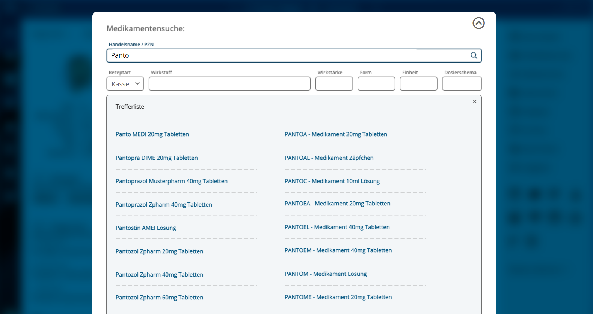
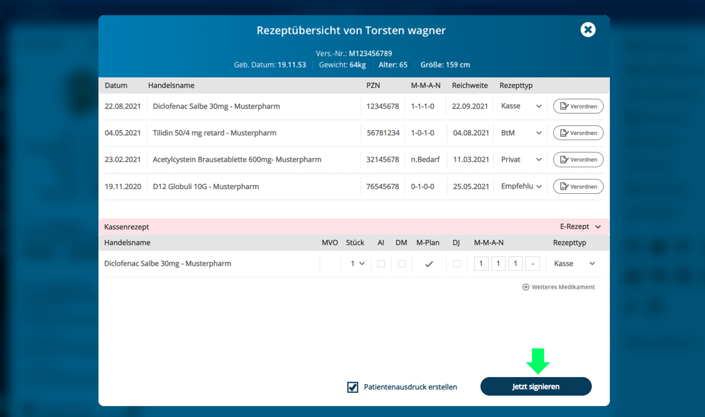

Hinweis: Für den Verordnungsprozess von Rezepten gibt es regulierende Vorgaben, welche durch die Primärsysteme der verordnenden Leistungserbringerinstitutionen umgesetzt werden müssen. U.a.
§ 73 SGB V
Bundesmantelvertrag-Ärzte
“Technische Anlage zur elektronischen Arzneimittelversorgung”
[KBV_ITA_VGEX_Technische_Anlage_ERP] Die in diesem Implementierungsleitfaden beschriebenen best practice für User Experience soll die Umsetzung im Primärsystem so unterstützen, dass der Verordnungsprozess für den Nutzer effizient erfolgen kann. Die best practice für User Experience stellen eine Umsetzungsempfehlung dar. D.h. es ist den Herstellern der Primärsystem freigestellt, effizientere Lösungen zu implementieren, welche den Verordnungsprozessen in den Primärsystemen entsprechen.
Allgemeine Hinweise
E-Rezept in jedem Verordnungsvorgang sichtbar
Der Nutzer des Systems soll in jedem Verordnungsvorgang für Arzneimittel die Möglichkeit haben, ein E-Rezept ausstellen zu können.
Das PS der verordnenden LEI SOLL es dem Nutzer ermöglichen, in jedem Verordnungsvorgang für Arzneimittel, in denen ein E-Rezept zulässig ist, ein E-Rezept zu erstellen.
Ladevorgänge im Hintergrund
Das Primärsystem soll bei Ladevorgängen zum Anlegen, Speichern und Verarbeiten eines E-Rezepts dem Nutzer das Weiterarbeiten im System erlauben. Insbesondere Signaturen sollen gemäß[gemILF_PS#A_23502 - Signaturerstellung im Hintergrund] im Hintergrund verarbeitet werden. Dem Nutzer werden nur bei Fehlermeldungen auffällige und für den Nutzer verständliche Hinweise angezeigt. Erfolgsmeldungen können so in die Benutzeroberfläche integriert werden, dass sie keine Interaktion des Nutzers verlangen und den Nutzer nicht im weiteren Arbeitsprozess stören.
Das PS der verordnenden LEI SOLL die Verarbeitung von Daten und Kommunikation mit den Komponenten der TI im Hintergrund vornehmen und dem Nutzer parallel die Arbeit im Primärsystem ermöglichen, sofern keine Abhängigkeit zur Verarbeitung besteht.
Das PS der verordnenden LEI SOLL dem Nutzer das Ergebnis einer Verarbeitung , welche das PS im Hintergrund durchgeführt hat, darstellen, ohne dabei den Arbeitsfluss zu unterbrechen. Fehlermeldungen sollen dabei deutlicher sichtbar sein als Erfolgsmeldungen.
Konfigurationsmöglichkeiten des Systems
E-Rezept als Default
In den Einstellungen des Primärsystems kann das E-Rezept übergreifend oder für einzelne Patienten als Default eingestellt werden. Das E-Rezept ist dann bei jedem Verordnungsvorgang (bei dem E-Rezept zulässig ist) voreingestellt. Der Nutzer spart sich einen zusätzlichen Klick, um von Muster 16 auf E-Rezept zu wechseln.
Das PS der verordnenden LEI SOLL einen patienten-individuellen Konfigurationsparameter anbieten, ob Verordnungen für den Patienten per Default als E-Rezept erstellt werden.
Default Konfiguration und Vorbelegung für die Erstellung
eines E-Rezeptes Um Rezepte schnell erstellen zu können, soll es möglich sein, in den Einstellungen bestimmte Parameter und Verhalten von neu erstellten E-Rezepten zu setzen. In den Einstellungen des Primärsystems kann für das E-Rezept je Patient der Einlöseweg als Default eingestellt werden (Patientenausdruck, E-Rezept-App oder eGK). Wenn der Ausdruck konfiguriert wurde, wird dann standardmäßig bei jedem E-Rezept automatisch der Patientenausdruck gedruckt. Der Nutzer spart sich in dem Fall einen zusätzlichen Klick bei jedem E-Rezept. Weitere Konfigurationsparameter und Übernahme von hinterlegten Stammdaten können den Verordnungsprozess beschleunigen.
Das PS der verordnenden LEI SOLL einen patienten-individuellen Konfigurationsparameter anbieten, ob für ein E-Rezept default-mäßig der Patientenausdruck ausgedruckt, oder ob das Rezept über das E-Rezept-FdV oder mittels eGK eingelöst werden soll.
Das Primärsystem soll für die Einführung des patienten-individuellen Konfigurationsparameter einen Defaultwert anbieten.Die initiale Wert der Einstellung kann auf Basis der letztmaligen oder ersten Ausstellung eines E-Rezeptes für den Versicherten gesetzt werden.
Das PS der verordnenden LEI SOLL bei der Erstellung des E-Rezeptes die für den behandelnden Arzt und für die Einrichtung hinterlegten Stammdaten in die Verordnung übernehmen.
Erstellen eines E-Rezepts
Optimaler Klickpfad
Das PS der abgebenden LEI SOLL zum Erstellen von neuen E-Rezepten folgenden Klickpfad umsetzen.
Name
E-Rezept erstellen - Optimaler Klickpfad
Vorbedingung
Der Nutzer befindet sich in einer der Medikation des Patienten bezogenen Ansicht, z.B. der Patientenakte des Primärsystems,
einer Übersicht der bisher verordneten Medikationen, einer Ansicht des eMP/BMP.
Nachbedingung
Alle Verordnungen wurden signiert, in den E-Rezept-Fachdienst eingestellt und ggf. der Patientenausdruck gedruckt.
Ablauf
Der Arzt oder MFA startet den Prozess zur Erzeugen einer neuen Verordnung.
Suchmöglichkeiten zur Auswahl des Präparates werden angezeigt.
a) Arzt: Detaillierter Verordnungsinhalt (als E-Rezept dargestellt) wird ausgewählt und die Verordnung zur Signatur freigegeben.
b) MFA: Detaillierter Verordnungsinhalt (als E-Rezept dargestellt) wird ausgewählt und die Verordnung in der Aufgabenliste gespeichert
(und zur späteren Signatur dem Arzt vorgelegt).
Optional: Die Schritte 1 bis 3 können bei mehreren auszustellenden Verordnungen wiederholt werden.
Mit dem Start des Prozesses „Jetzt Signieren“ durch den Arzt werden alle zur Signatur freigegebenen Verordnungen in einem
Hintergrundprozess qualifiziert signiert und in den E-Rezept-Fachdienst eingestellt.
Es wird ein Hinweistext angezeigt, wenn das Signieren und das Einstellen in den E-Rezept-Fachdienst erfolgreich abgeschlossen wurde.
Ist die Einstellung „Patientenausdruck erstellen“ gewählt, werden nach dem erfolgreichen Einstellen in den
E-Rezept-Fachdienst die Patientenausdrucke automatisch gedruckt.
Alternative
Alternativ zu Schritt 1 und 2 kann der Prozess zum Erzeugen einer wiederholten Verordnung aus einer Patientenhistorie,
Verordnungen aus einer Hausapotheke und aus einem Medikationsplan nach § 31a SGB V gestartet werden.
Die Regelungen aus Anlage 23 BMV-Ä sind zu beachten.
Das PS der verordnenden LEI SOLL es dem Nutzer ermöglichen, aus jeder der Medikation des Patienten bezogenen Ansicht einen Prozess zur Erzeugung einer neuen Verordnung starten zu können.
Abbildung: Beispiel einer Rezeptübersicht
Das PS der verordnenden LEI SOLL Informationen, die sich aus dem aktuellen Aufrufkontext ergeben (z.B. den Namen des aktuell gewählten Patienten oder die medizinischen Informationen einer vorherigen Verordnung), übernehmen und diese in der neuen Verordnung vorausfüllen.
Das PS der verordnenden LEI SOLL dem Nutzer nach Auswahl der Option zur Erstellung einer Verordnung die Möglichkeit geben, nach dem gewünschte Präparat aus einer Datenbank zu suchen und die zugehörigen Informationen in die Verordnung übernehmen.
Das PS kann dem Nutzer in diesem Arbeitsschritt auch eine Liste der häufig verschriebenen Medikamente anbieten.

Abbildung: Beispiel einer Medikamentensuche
Das PS der verordnenden LEI SOLL dem Nutzer nach der Auswahl des Verordnungsinhalts die Möglichkeit geben, weitere Details (z.B. Anzahl der Packungen) der aktuellen als E-Rezept dargestellten Verordnung hinzuzufügen. Es SOLL den Nutzer darauf hinweisen, dass mit der Bestätigung dieser Auswahl die Verordnung erfolgen soll und der erste Schritt zur Signatur ausgelöst wird. Dieser Hinweis muss durch den Nutzer nicht bestätigt werden.
Hinweis: Um den Nutzer hinreichend auf den folgenden Signaturschritt (nach [gemILF_PS#A_19138- PS: Auslösen der Komfortsignatur bei Nachnutzung der Primärsystem-Authentisierung]) hinzuweisen, muss z.B. bei der Verwendung einer Schaltfläche diese deutlich machen, dass
eine Verordnung erzeugt werden wird. Dies kann erreicht werden durch eine
passende Benennung z.B. mit “Verordnen”, “Dem Rezept hinzufügen”.
im nächsten Schritt die Signatur erfolgen kann. Dies kann erreicht werden, durch eine
passende Benennung z.B. mit “[Verordnung/Arzneimittel]zur Signatur auswählen” oder durch die Verwendung eines Signatur-Icons.
Abbildung: Beispiel der Maske einer neuen Verordnung
Das PS der verordnenden LEI SOLL dem Nutzer ermöglichen, mehrere Verordnungen für den aktuellen Patienten zum späteren Signieren vorzubereiten, indem er die bisher beschriebenen Schritte des optimalem Klickpfades für jede Verordnung wiederholt.
Hinweis: Im Gegensatz zur Aufgabenliste handelt es sich bei dieser Liste um eine patientenspezifische Sammlung von zu signierenden Rezepten.
Das PS der verordnenden LEI SOLL dem Arzt die Möglichkeit geben, alle vorbereiteten Verordnungen auf einmal zu signieren (zweiter Klick), indem er dies auf einer diesbezüglich eindeutig benannten Schaltfläche auswählt.
Hinweis: Mit der Umsetzung der Aufgabenliste für das Signieren der Verordnungen wird diese Anforderung erfüllt.

Abbildung: Beispiel einer Rezeptübersicht Hinweis: Um die Benennung der Schaltfläche eindeutig zu gestalten, kann diese z.B. als "Jetzt signieren" benannt werden.
Das PS der verordnenden LEI SOLL sicherstellen, dass der Signaturvorgang im Hintergrund läuft und eine weitere vollumfängliche Nutzung des PS möglich bleibt. Falls es zu Fehlern beim Signaturvorgang kommt, MUSS das PS dem Nutzer diese anzeigen.
Das PS der verordnenden LEI SOLL dem Nutzer einen Hinweistext anzeigen, wenn das Signieren und das Einstellen im E-Rezept-Fachdienst erfolgreich war. Das Ausblenden des Hinweistextes erfolgt ohne Interaktion des Nutzers.
Das PS der verordnenden LEI SOLL nach dem erfolgreichem Einstellen eines E-Rezeptes in den E-Rezept-Fachdienst, wenn die entsprechende Konfigurationseinstellung für den Einlöseweg dies vorsieht, den E-Rezept-Ausdruck automatisch ausdrucken.
Entscheidungsunterstützung: E-Rezept oder Muster 16
Derzeit können nicht alle Verordnungsinhalte, die per Muster 16 zu verschreiben sind, als E-Rezept abgebildet werden. Der Nutzer soll hier nicht überlegen müssen, was er per E- Rezept verschreiben kann und was nicht. In der Benutzerführung soll der Nutzer informiert werden, ob eine Verordnung als E-Rezept erstellt werden kann oder nicht. Um zu vermeiden, dass der Nutzer etwas über die Freitextverordnung verschreibt, was derzeit nicht als E-Rezept zulässig ist, soll der Nutzer bei einer Freitextverordnung darüber in Kenntnis gesetzt werden, was derzeit als E-Rezept verordnet werden darf. Ein aktueller Stand der verfügbaren Features (Umfang der Anwendung E-Rezept) ist auf der gematik/api-erp Seite auf GitHub zu finden.
Das PS der verordnenden LEI SOLL die Möglichkeit zum Erstellen eines E-Rezepts nur anbieten, wenn der zu erstellende Verordnungstyp durch die Anwendung E-Rezept unterstützt wird.
Freitextverordnungen sollen nur verwendet werden, wenn das Erstellen einer strukturierten Verordnung für PZN, Wirkstoff oder Rezepturen nicht möglich ist.
Das PS der verordnenden LEI SOLL dem Nutzer beim Erstellen einer Freitextverordnung den Hinweis darstellen, was aktuell als E-Rezept verordnet werden darf.
Der Hinweis soll sichtbar sein, aber nicht den Arbeitsablauf stören.
Abgabehinweis für Apotheken (zus. Freitext)
Um weiterführende Informationen zu einer Verordnung zu notieren (z.B. die Diagnose als Hinweis für den Apotheker), soll der Arzt das Feld im Verordnungsdatensatz “Abgabehinweis für Apotheken” nutzen. Dieses Feld muss dem Arzt im Verordnungsprozess angezeigt werden, so dass er es wahrnimmt und in Situationen, in denen er eigentlich etwas handschriftlich auf dem Muster 16 notiert hätte, nutzt.
Das PS der verordnenden LEI SOLL es dem Nutzer ermöglichen, Freitexteingaben für Abgabehinweise für den Verordnungsdatensatz (KBV_ERP_Prescription MedicationRequest.note) zu erfassen.
Verordnender Arzt aus HBA gefüllt
Beim Erstellen einer Verordnung kann es zu einer Abweichung zwischen dem die Verordnung Erstellenden und dem die Verordnung Signierenden kommen. Dies ist nach der §2 AMVV in Absatz (1) Satz 1 nicht zulässig.Es ist verpflichtend, dass der im Verordnungsdatensatz in author referenzierte Practitioner mit dem im Signaturzertifikat der QES angegebenen Person übereinstimmt.
Das PS der verordnenden LEI SOLL sicherstellen, dass für den im Verordnungsdatensatz referenzierten Practitioner (KBV_PR_ERP_Composition Composition.author) die Daten des Leistungserbringers verwendet werden, mit dessen HBA der Verordnungsdatensatz signiert wird.
Sonderfall Vertretungssituation
Hinweis: Das in diesem Abschnitt beschriebene Szenario “Sonderfall Vertretungsfall” findet keine Anwendung in ZPVS. Wenn Ärzte aufgrund von Urlaub/Krankheit/Abwesenheit in der eigenen Praxis ausfallen, dürfen sie sich von einem Kollegen für maximal bis zu 3 Monate innerhalb von 12 Monaten vertreten lassen. Der Nutzer soll (ggf. für einen bestimmten Zeitraum) entscheiden können, welcher der Vertretungsfälle zutrifft (z.B. im Rechtemanagement des Systems). Das System füllt dann die Informationen zum Verordnenden Arzt in der Verordnung automatisch richtig aus. Dabei gibt es folgende Vertretungsfälle (siehe [https://www.kbv.de/html/erezept.php], Stand 27.02.2023)
Kollegiale Vertretung: (nach § 20 Musterberufsordnung): Die/der abwesende Arzt
lässt sich von einem fachgleichen Kollegen/in in dessen Praxis vertreten. Die Abrechnung erfolgt über die LANR/BSNR des Vertretenden. Im Datensatz der elektronischen Verordnung erfolgt keine Kennzeichnung einer Vertretungskonstellation, es werden die Daten der ausstellenden Person und der vertretenden Praxis übermittelt.
Persönliche Vertretung: Ein Vertreter oder eine Vertreterin wird in der Praxis des
Vertretenen tätig, bspw. als dessen Sicherstellungsassistentin im Falle von Kindererziehungszeiten. Rechtsgrundlage wäre hier § 32 Abs. 2, Satz 2 Ärzte- Zulassungsverordnung. Die Abrechnung erfolgt über die LANR/BSNR des Vertretenen. Es muss eine Kennzeichnung des Vertreters im Datensatz erfolgen. Es werden die Daten der vertretenden ausstellenden Person sowie des vertretenen Arztes und dessen Praxis übermittelt.
Das PS der verordnenden LEI SOLL es ermöglichen für ein Nutzerprofil eine Vertretungssituation für einen Zeitraum zu hinterlegen. Folgende Konfigurationen sind zulässig: Kollegiale Vertretung (nach 20 Musterberufsordnung) Persönliche Vertretung (nach 20 Musterberufsordnung) Persönliche Vertretung (nach
Das PS der verordnenden LEI SOLL es in einer Vertretungssituation ermöglichen, dass der Vertretende anstatt der ursprünglich in der Verordnung benannte Arzt das E-Rezept signieren kann.
Das PS der verordnenden LEI SOLL bei der Vertretungskonstellation "Kollegiale Vertretung" (nach § 20 Musterberufsordnung) den vertretenden Arzt, der die Verordnung ausstellt und signiert, in der Verordnung hinterlegen.
Der ausstellende (signierende) Arzt wird in KBV_PR_ERP_Composition Composition.author angegeben.
Das PS der verordnenden LEI SOLL bei der Vertretungskonstellation "Persönliche Vertretung" (nach § 32 Abs. 2, Satz 2 Ärzte-Zulassungsverordnung) sowohl den vertretenden Arzt, der die Verordnung ausstellt und signiert, als auch den zu vertretenden Arzt in der Verordnung hinterlegen.
Nach der “Technischen Anlage zur elektronischen Arzneimittelversorgung” (P36-34, Stand 15.11.2022) der KBV wird die Verordnung bei der persönlichen Vertretung wie folgt angepasst werden:
Der ausstellende (signierende) Arzt wird in KBV_PR_ERP_Composition
Composition.author hinterlegt.
Der verantwortliche (zu vertretende) Arzt wird in KBV_PR_ERP_Composition
Composition.attester.party hinterlegt.
Sonderfall Weiterbildungsassistent
Hinweis: Das in diesem Abschnitt beschriebene Szenario “Sonderfall Weiterbildungsassistent” findet keine Anwendung in ZPVS. EinWeiterbildungsassistent ist berechtigt, E-Rezepte auszustellen, solange die ordnungsgemäße Überwachung und Anleitung durch eine Vertragsärztin oder einen Vertragsarzt gewährleistet ist.
Das PS der verordnenden LEI SOLL es dem Nutzer ermöglichen, zu entscheiden, ob der Verordnende ein Weiterbildungsassistent ist.
Das PS der verordnenden LEI SOLL es dem Nutzer ermöglichen, die Daten zur ausbildenden Person eines Weiterbildungsassistenten in der Konfiguration des Systems zu verwalten, sodass die Daten für das Erstellen von Verordnungen durch den Weiterbildungsassistenten genutzt werden können.
Die für den Weiterbildungsassistenten und die ausbildende Person anzugebenden Daten sind in [KBV_ITA_VGEX_Technische_Anlage_ERP] festgelegt.
Das PS der verordnenden LEI SOLL beim Erstellen eines E-Rezeptes durch einen Weiterbildungsassistenten die Daten des Weiterbildungsassistenten und der ausbildenden Person in den Verordnungsdatensatz übernehmen.
Der Weiterbildungsassistent signiert mit seinem HBA das E-Rezept. Wenn der Weiterbildungsassistent noch keinen HBA besitzt, dann kann er nicht als Ersteller des E- Rezeptes erfasst werden. Siehe auch [https://www.kbv.de/html/erezept.php ]
Verordnung E-T-Rezept
Für die Verordnungen von E-T-Rezepten sind gesonderte UX-Vorgaben definiert, um den Anwender dabei zu unterstützen, die gesetzlichen Vorgaben einzuhalten und eine Verordnung erfolgreich im E-Rezept-Fachdienst einzustellen.
Das PS der verordnenden LEI MUSS beim Erstellen von Verordnungen für Arzneimittel nach §3a AMVV sicherstellen, dass das Kennzeichen "T-Rezept" dem Nutzer gut sichtbar angezeigt wird.
Das PS der verordnenden LEI SOLL beim Erstellen eines E-T-Rezepts den Nutzer dabei unterstützen, die anzugebende Reichdauer automatisch zu berechnen, wenn die benötigten strukturierten Dosier- und Packungsinformationen im PS vorliegen.
Das PS der verordnenden LEI MUSS dem Nutzer beim Erstellen eines E-T-Rezeptes die Möglichkeit geben, die Reichdauer der E-T-Verordnung manuell einzugeben.
Das PS der verordnenden LEI MUSS dem Nutzer beim Erstellen eines E-T-Rezeptes einen Warnhinweis darstellen, wenn die zulässige maximale Reichdauer, entsprechend den gesetzlichen Vorgaben, von 4 Wochen für gebärfähige Frauen und andernfalls 12 Wochen überschritten wird. Folgende Texte* sind anzuzeigen: "Für gebärfähige Frauen darf die Reichdauer der Verordnung 4 Wochen nicht überschreiten" "Die Reichdauer der Verordnung darf 12 Wochen nicht überschreiten" *Die Formulierung des anzuzeigenden Textes werden durch eine Bekanntmachung des BfArM definiert.
Mehrfachverordnungen
Abbildung: Beispiel der Maske für eine Mehrfachverordnung
Das PS der verordnenden LEI SOLL dem Nutzer Mehrfachverordnungen in jedem Verordnungsvorgang als Option anbieten (mindestens bei Verordnungen für Patienten mit einer Dauermedikation). <=
Das PS der verordnenden LEI SOLL es dem Nutzer ermöglichen Mehrfachverordnungen leicht aus einem Verordnungsvorgang heraus generieren können.
Das PS der verordnenden LEI SOLL es dem Nutzer ermöglichen bei Mehrfachverordnungen den Verordnungsinhalt nur einmalig angeben zu müssen. Das PS der verordnenden LEI SOLL die Teilverordnungen automatisch mit dem gleichen Inhalt füllen.
Das PS der verordnenden LEI SOLL es dem Nutzer ermöglichen die Anzahl der Teilverordnungen mit einem Klick auswählen zu können.
Das PS der verordnenden LEI SOLL den Nutzer beim Berechnen und Ausfüllen der Einlösefristen der einzelnen Teilverordnungen unterstützen und sinnvolle Abstände zur Auswahl anbieten (z.B. quartalsweise, nach Ende der berechneten Reichweite, etc.). Eine manuelle Änderung der Einlösefristen MUSS einfach möglich sein (z.B. über Auswahl des Datums über einen Kalender).
Das PS der verordnenden LEI SOLL dem Arzt ermöglichen, dass zusammengehörende Teilverordnungen auf einmal und einzeln gelöscht werden können.
Das PS der verordnenden LEI SOLL dem Nutzer ermöglichen, dass alle Teilverordnungen in einer Operation mit der Komfortsignatur signiert werden können.
Das PS der verordnenden LEI SOLL es ermöglichen, dass Mehrfachverordnungen inhaltlich von MFA vorbereitet und dem Arzt zur Signatur vorgelegt werden können.
Aufgabenliste
Zentrale Aufgabenliste
Ein Arzt arbeitet in seinem Arbeitsablauf verschiedene Signaturaufgaben (bspw. für die Elektronische Arbeitsunfähigkeitsbescheinigung oder das E-Rezept) ab. Diese sollen ihm im Primärsystem an einer zentralen Stelle (im Folgenden als „Aufgabenliste“ bezeichnet) angezeigt werden, sodass die Aufgaben einfach zu finden und zu bearbeiten sind. Diese Aufgabenliste soll sortier- und filterbar sein. In Gemeinschaftspraxis, wo bspw. mehrere Ärzte gemeinsam Patienten behandeln, soll es möglich sein die Rezepte anderer Kollegen einzusehen und zu signieren.
Das PS der verordnenden LEI SOLL es dem Nutzer ermöglichen, die zu signierenden Verordnungen in einer Liste anzuzeigen und zu bearbeiten.
Zu den relevanten Informationen einer Verordnung gehören Patient, Medikament, Einnahmehinweise, Arzt, Weg der Einlösung, Ersteller etc.. Die Aufgabenliste kann weitere Signaturaufträge oder andere Praxisaufgaben beinhalten. Folgende Grafik dient als Beispiel:
Abbildung: Beispiel einer Aufgabenliste mit Signaturaufträgen
Das PS der verordnenden LEI SOLL dem Nutzer der Aufgabenliste ermöglichen, diese mindestens nach folgenden Kriterien zu sortieren und zu filtern: Behandelnder Arzt Patient Erstellungsdatum Art des zu signierenden Dokuments (z.B. eAU, E-Rezept, etc.)
Erstellen von Folgerezepten durch MFA
Für einen effizienten Arbeitsablauf soll ein MFA E-Rezepte anlegen, ausfüllen und anschließend dem Arzt zum Signieren vorlegen können. Hierbei soll der behandelnde Arzt über die Patientenakte automatisch ausgewählt werden, um das Rezept in der Aufgabenliste einem Arzt zuordnen zu können (siehe auch Kap. 1.2.2 Default Konfiguration und Vorbelegung für die Erstellung eines E-Rezeptes). Das System muss verhindern, dass ein Rezept von einer Person ohne persönlichen HBA signiert werden kann. Das bedeutet insbesondere, dass aus dem Benutzeraccount einer MFA nicht auf die Komfortsignatur des Arztes zugegriffen werden kann. Es darf lediglich gespeichert werden, um es dem Arzt dann zum Signieren zu übergeben.
Das PS der verordnenden LEI SOLL es ermöglichen, dass Nutzer ohne Zugriff auf einen HBA ein E-Rezept im System anlegen und ausfüllen können. Es SOLL dem Nutzer ermöglichen, das Rezept einem Verordnenden zur Signatur zu übermitteln.
Das PS der verordnenden LEI SOLL verhindern, dass ein Nutzer ohne HBA ein E-Rezept signieren kann.
Benachrichtigungen in der Aufgabenliste
Um eine zeitnahe Bearbeitung von Signaturaufgaben des Arztes zu ermöglichen, soll der Arzt auf diese in Form einer Benachrichtigung hingewiesen werden. So können noch nicht signierte und vorbereitete E-Rezepte schneller signiert werden. Das System kann den Arzt in verschiedenen Formen bspw. Pushnachrichten oder Statusfeld über die Anzahl der offenen Aufgaben benachrichtigen.
Das PS der verordnenden LEI SOLL dem Nutzer über einen Hinweis darüber benachrichtigen, dass neue zu signierende Aufgaben in der Aufgabenliste vorhanden sind.
Bearbeiten eines Rezeptes/ Aufgabe vor der Signatur
Der Verordnende hat die Möglichkeit die in der Aufgabenliste vorbereiteten Verordnungen vor dem Signieren zu prüfen. Er soll aus der Aufgabenliste heraus einzelne Einträge bearbeiten können. Er soll aus der Aufgabenliste heraus die Informationen des Patienten, für den das E-Rezept ausgestellt werden soll, einsehen können, falls er für die Prüfung weitere Informationen zum Patienten benötigt.
Das PS der verordnenden LEI SOLL es dem Nutzer ermöglichen, beim Überprüfen eines E-Rezeptes in der Aufgabenliste noch Veränderungen an der Verordnung vorzunehmen, bevor er diese signiert.
Das PS der verordnenden LEI SOLL es dem Nutzer ermöglichen, die Informationen eines Patienten zu einem Eintrag aus der Aufgabenliste heraus einzusehen.
Das PS der verordnenden LEI SOLL es dem Nutzer ermöglichen, die grafische Ansicht von Rezepten aus der Aufgabenliste heraus anzuzeigen.
Sammelbearbeitung der Aufgaben (Signieren)
Wie in[gemILF_PS#A_23503 - Bündeln von Signaturen zur Stapelsignatur] beschrieben, muss der Arzt Signaturen bündeln und als Sammelbearbeitung abarbeiten können. Dies gilt auch für das Signieren von E-Rezepten.
Das PS der verordnenden LEI SOLL es dem Nutzer ermöglichen, über eine Mehrfachauswahl von Einträgen in der Aufgabenliste diese für die Signatur auszuwählen.
Mit der Auswahl bestätigt der Nutzer, dass die Verordnung erfolgen soll und dass im nächsten Schritt die Signatur ausgelöst wird. (erster Klick im Sinne von [gemILF_PS#A_19138- PS: Auslösen der Komfortsignatur bei Nachnutzung der Primärsystem-Authentisierung]). Hinweis: Wie im optimalen Klickpfad beschrieben, ist es wichtig, bei der Bereitstellung von Verordnungen zur Signatur die Schaltflächen klar und eindeutig zu benennen/kennzuzeichnen, um zusätzliche Bestätigungen durch den Nutzer zu vermeiden und den Signaturprozess reibungslos zu gestalten.
Nachbereitung
Benachrichtigung des Patienten über Ausstellung eines
Folgerezeptes In den Fällen, wo der Patient nicht in der Praxis anwesend ist, wenn der Arzt ein E-Rezept ausstellt (z.B. Folgerezepte oder Rezepte, die telefonisch bestellt wurden), möchte der Arzt den Patienten automatisch darüber in Kenntnis setzen, dass ein E-Rezept ausgestellt wurde und damit zum Einlösen in der Apotheke bereit steht. Somit kann der Patient dann das E-Rezept mit der App oder der eGK einlösen.
Das PS der verordnenden LEI SOLL es dem Nutzer ermöglichen, nach dem erfolgreichen Einstellen eines E-Rezepts im E-Rezept-Fachdienst eine Benachrichtigung (bspw. per SMS oder E-Mail) an den Patienten zu versenden.
Das PS der verordnenden LEI DARF in der Nachricht, die den Patienten darüber informiert, dass ein E-Rezept ausgestellt wurde, NICHT medizinische oder personenbezogene Informationen einfügen.
Beispiel für eine Nachricht: “Ihr E-Rezept wurde soeben von Ihrem Arzt unterschrieben und kann nun mit der Gesundheitskarte oder der E-Rezept App in der Apotheke eingelöst werden. Um das Rezept anzusehen und vorab an Ihre Apotheke zu senden, empfehlen wir die Nutzung der E-Rezept App der gematik.”
Fehlermanagement
Bei Ausfall auf Muster 16 zurückgreifen
Wenn es technisch nicht möglich ist ein E-Rezept auszustellen (Ausfall einer der relevanten Komponenten), wird automatisch ein Muster 16 mit dem Verordnungsinhalt ausgewählt. Dem Nutzer wird ein Hinweis eingeblendet, dass es aktuell nicht möglich ist, ein E-Rezept auszustellen. Um festzustellen, ob relevante Komponenten der TI nicht erreichbar sind, kann ein einfacher Healthcheck (https://github.com/gematik/api-erp/blob/master/docs/erp_ps_probing.adoc#einfacher- health-check ) genutzt werden. Es sollte ebenfalls auf ein Muster 16 zurückgegriffen werden, wenn beim Erstellen eines Rezeptes in der Kommunikation mit den Diensten der TI ein Fehler auftritt.
Das PS der verordnenden LEI SOLL dem Nutzer bei einem Ausfall von für die Anwendung E-Rezept relevanten Komponenten (negativer Healthcheck der TI, Fehler in der Kommunikation mit Komponenten der TI) automatisch einen Muster 16 Ausdruck erstellen. Das System SOLL dem Nutzer dieses Verhalten per Hinweis mitteilen.
Fehlermeldungen
Verständliche Fehlermeldungen
Im Arbeitsablauf des Nutzers können Fehler in der Erstellung und Verarbeitung eines E- Rezeptes auftreten. Da vom Nutzer kein technisches Vorwissen erwartet werden darf, sind Fehlermeldungen so anzugeben, dass dieser nach Möglichkeit darauf reagieren kann. Hierbei sollen Fehlermeldungen so aufbereitet werden, dass der Nutzer versteht, welches System im Prozess den Fehler verursacht hat. Außerdem sollen bei technischen Fehlern diese sprachlich aufbereitet werden, so dass der Nutzer den Inhalt des Fehlers verstehen kann.
Das PS der verordnenden LEI SOLL beim Auftreten eines Fehlers dem Nutzer eine verständliche Fehlermeldung ausgeben und nicht die von der Quelle erzeugte technische Fehlermeldung darstellen.
Das PS der verordnenden LEI SOLL beim Auftreten eines Fehlers, falls möglich, dem Nutzer Handlungsempfehlungen ausgeben, die dazu beitragen können, den Fehler zu beseitigen.
Die Bereitstellung der Fehlerdetails per Email o.Ä. steht mit diesen Anforderungen nicht im Widerspruch. Es soll weiterhin möglich sein technische Details an den technischen Support zu übermitteln.
Status des E-Rezepts bei Versuch es zu löschen
Ein Arzt kann ein von ihm ausgestelltes E-Rezept löschen. Wenn das nicht möglich ist, soll der Arzt aus dem PS heraus den Grund erkennen können, um besser darauf reagieren zu können. Wenn versucht wird das Rezept zu löschen, sind folgende Fehlermeldungen auszuwerten:
Returncode 403 - Forbidden: Das Rezept ist gesperrt und befindet sich in
Bearbeitung bei einer Apotheke. Solange das E-Rezept noch nicht durch die Apotheke beliefert wurde, kann es durch die Apotheke gelöscht werden.
Returncode 410 - Gone: Das Rezept wurde bereits gelöscht und ist nicht mehr im E-
Rezept-Fachdienst verfügbar
Das PS der verordnenden LEI MUSS, falls beim Löschen eines E-Rezeptes ein Fehler auftritt, dem Nutzer in einem Hinweis den Grund für den gescheiterten Löschversuch darstellen. Dieser leitet sich aus dem Fehlercode vom E-Rezept-Fachdienst ab.